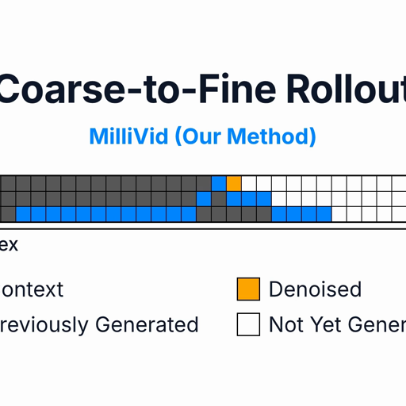
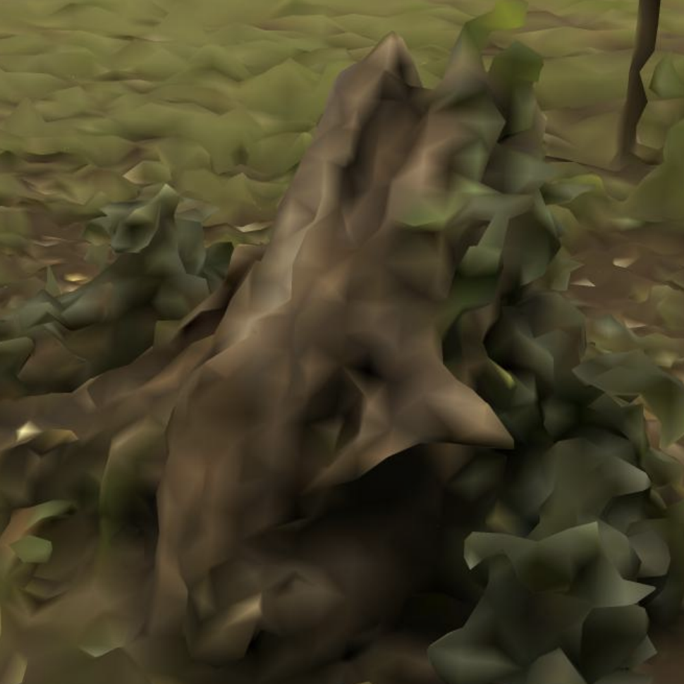
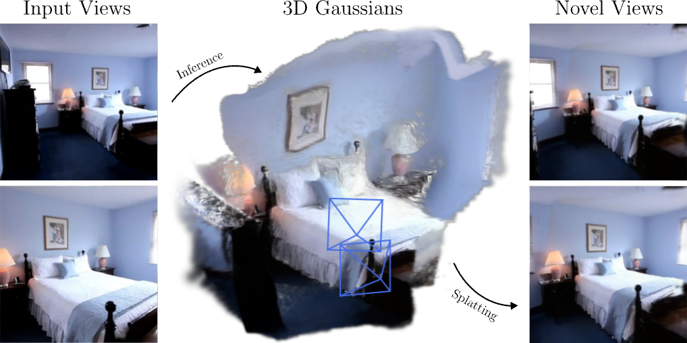
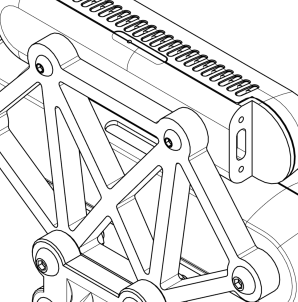
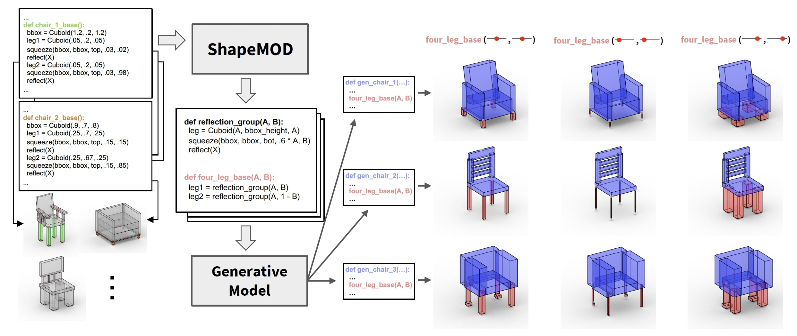

David Charatan
I'm a PhD student at MIT, advised by Vincent Sitzmann.
Publications





Resume
Ph.D., Computer Science
Massachusetts Institute of Technology, Cambridge, MA
2022 – Present
Research Intern
Toyota Research Institute, Los Altos, CA
Summer 2026
Student Researcher
Google DeepMind, San Francisco, CA
Worked with Ben Poole, Aleks Holynski, and Ruiqi Gao.
Summer 2024
Research Engineer
Common Sense Machines, Cambridge, MA
May 2021 – Aug 2022
Sc.B., Computer Engineering
Brown University, Providence, RI
with honors, magna cum laude, 4.0 GPA
2017 – 2021
Software Engineering Intern
Bloomberg L.P., New York, NY
Summer 2020
Software Engineering Intern
Onshape, Cambridge, MA
Summer 2019
Software Engineering Intern
USNR, Woodland, WA
Summer 2018